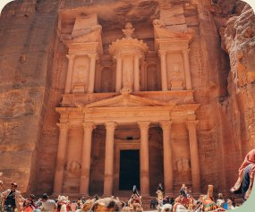
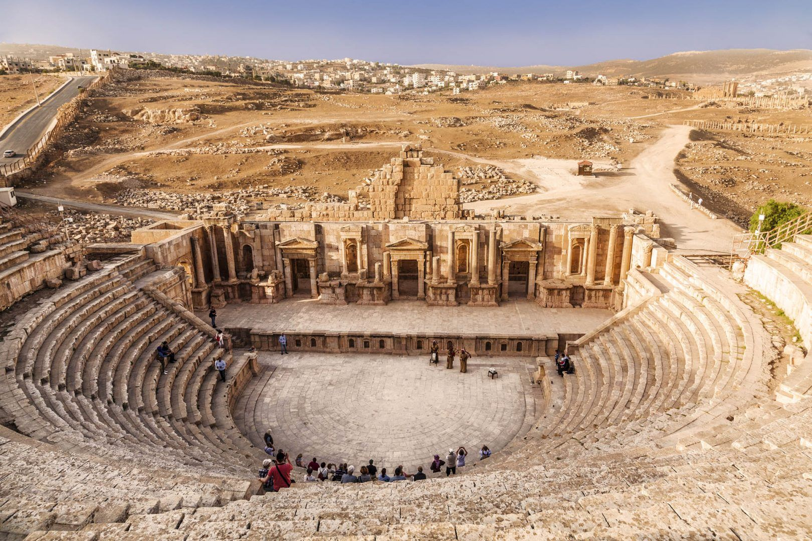

History & Heritage
Jordan’s Hidden Places
Most Famous Spots

Petra
The Rose City, carved into pink rock, and one of the New Seven Wonders of the World.
Walk the Siq to the Treasury
Walk through the narrow Siq to the Treasury, climb up to the Monastery, and come back at night for Petra by Night.
- Location: Wadi Musa, about 3 hours south of Amman.
- Price: 50 JOD for one day, free with the Jordan Pass.
- Activities: Hiking, sightseeing, and Petra by Night.
- Services: Guides, horses and carriages, and restaurants.

Jerash
One of the best-kept Roman cities in the world, with long columned streets and theaters.
Roman City Tour
Walk the long columned street, stand in the Oval Plaza, and watch the Roman army and chariot show.
- Location: Jerash, about 50 minutes north of Amman.
- Price: About 10 JOD, free with the Jordan Pass.
- Activities: Sightseeing, history tours, and chariot show.
- Services: Visitor center, guides, and restaurants.